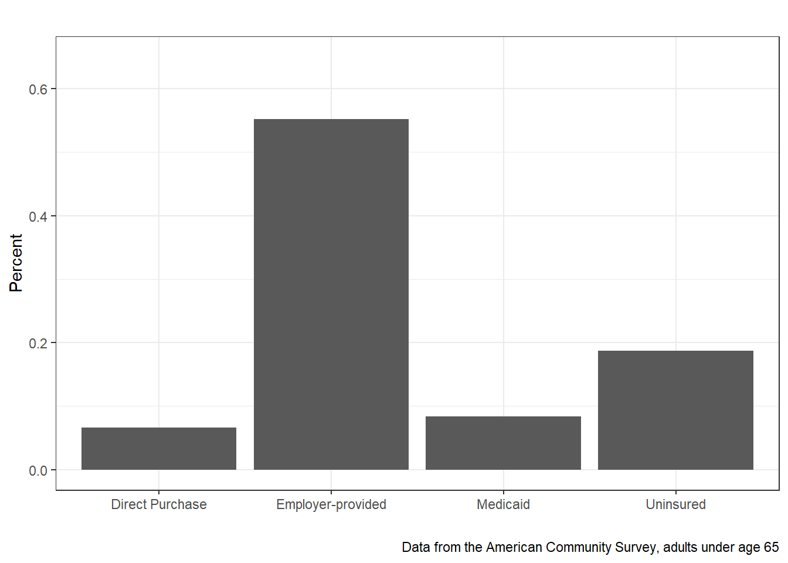
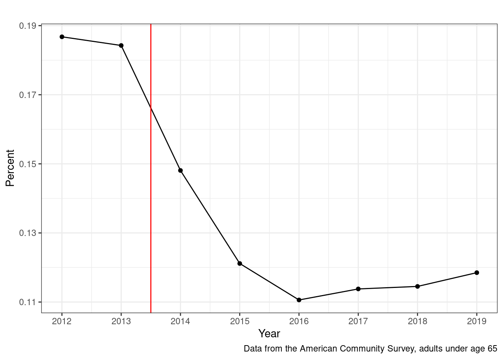

2 Getting Health Insurance
Figure 2.1 presents a snapshot of how the adult population (below age 65) received health insurance as of 2012. I’m focusing on 2012 here since there were some big changes in U.S. health insurance just after that with the passage of the Patient Protection and Affordable Care Act (ACA). Two things are clear from Figure 2.1: 1) a lot of adults were uninsured in the U.S. in 2012 (nearly 20%); and 2) the overwhelming majority of those that are insured receive their insurance from their employers. We’ll get back to that in Section 2.2.
After the passage of the ACA, the share of uninsured adults dropped dramatically, as reflected in Figure 2.2, where the passage of the ACA is reflected by the vertical line.

Fingally, Figure 2.3 shows the change in the source of insurance for the adult U.S. population (aged 64 or below) from 2012 through 2019. From Figure 2.2 and Figure 2.3, we see that the large reduction in uninsured can be explained by an increase in Medicaid and the share of adults with “direct purchase” (i.e., purchasing health insurance on their own, not from their employer).
As is hopefully clear from this discussion, one area where the U.S. health care system is relatively unique is that we have a very fragmented way of providing health insurance. The purpose of this chapter is to describe the different ways people receive health insurance in the U.S.
2.1 History of Private Health Insurance
Let’s start with a very brief history of private health insurance. In 1929, an innovative approach to healthcare called “hospital insurance” was introduced for schoolteachers, allowing them to receive medical care at Baylor University Hospital in Dallas, Texas. This system offered essentially pre-paid medical care for approximately 1,500 schoolteachers in the area. Teachers paid an annual fee, known as a “premium,” which amounted to $6 at the time (equivalent to $104 in 2023), providing coverage for up to 21 days of hospital care. This subscription-based model not only ensured access to healthcare for teachers but also offered a steady and reliable source of income for the hospitals, creating a sustainable financial arrangement for both parties involved.
The revenue model introduced by hospital insurance became widely popular and led to the establishment of Blue Cross, a network of hospitals. This network originated in Sacramento, California, in 1932 and quickly expanded. However, this structure brought about some distortions within the healthcare system. One notable distortion was the concentration of care in hospitals, even when other settings could potentially provide care at a lower cost. Additionally, the absence of price competition hindered the development of competitive pricing mechanisms. Despite these challenges, Blue Cross plans continued to grow throughout the 1930s. They operated as not-for-profit entities and enjoyed exemptions from typical regulations imposed on insurance markets. This unique approach allowed Blue Cross to play a significant role in shaping the healthcare landscape during that time.
Blue Cross expanded its services by venturing into prepaid physician services, which became known as Blue Shield. Eventually, the two entities merged to form Blue Cross and Blue Shield, a prominent player in the healthcare insurance industry. By the year 1940, Blue Cross and Blue Shield plans had become incredibly popular, accounting for half of all health insurance plans. In this system, hospitals were paid on a cost-plus basis, which means they received reimbursement for their expenses along with an additional percentage as profit. This payment structure will be further explained later. To foster fair competition, any other insurance plans seeking to compete with Blue Cross and Blue Shield had to offer a similar organizational structure. This consolidation and standardization within the healthcare insurance market had a significant impact on the industry’s development.
2.2 Employer Sponsored Insurance
The evolution of healthcare insurance took a significant turn with the emergence of employer-sponsored insurance. This shift brought about new dynamics in how healthcare coverage was provided and financed. As the cost of healthcare continued to rise, employers recognized the need to offer comprehensive insurance benefits to attract and retain talented employees. This led to the establishment of employer-sponsored insurance plans, where employers would contract with insurance companies to provide coverage to their employees. This transition marked a pivotal moment in the history of healthcare insurance, as it expanded access to healthcare for a significant portion of the population and fundamentally changed the relationship between employment and healthcare coverage.
Despite significant changes to health insurance markets over time, most recently introduced by the ACA, the majority of non-elderly (below age 65) adults in the U.S. continue to receive health insurance through their employer. The U.S. is one of the only developed countries to still rely on employers for health insurance, so it’s worthwhile to think briefly about how this came to be.
There are two important historical features of health insurance in the U.S. that contribute to our present-day reliance on employers as insurance providers. First, the stabalization act of 1942 temporarily suspended wage increases without official government approval. Without the ability to compete for workers on wages, employers turned increasingly toward more generous benefits packages, including pensions and health insurance. Second, just a decade later in 1954, the federal government made exempted insurance expenses from federal income taxes. This meant that, for individuals with some expected health care expenses, one dollar in health insurance benefits was worth more than one dollar in additional salary, since the latter would be taxed while the former would not be taxed. From the worker’s perspective, if they’re going to spend money on health care anyway, they would be better off spending that money through insurance without the tax. While there have been significant changes to the health care and health insurance landscape since the 1950s, federal policy has largely avoided any attempts to replace employer-sponsored health insurance.
With ESI, employers typically assume a substantial portion of the premium cost, shouldering a significant share of the financial burden. Employees contribute a smaller portion of the premium cost, often deducted from their wages on a pre-tax basis, providing some tax advantages. This arrangement allows employees to obtain coverage with reduced out-of-pocket expenses. Furthermore, many large employers adopt a self-funded approach, where they bear the actual cost of healthcare. In this model, the insurer acts as an administrator and negotiator, facilitating the management of the healthcare benefits. By self-funding, employers can potentially circumvent certain state-mandated benefits and state premium taxes, benefiting employers operating across state lines. This strategy provides flexibility and cost control for employers, while still ensuring the provision of essential healthcare coverage for their employees.
2.3 Non-group health insurance
Non-group health insurance refers to a form of health coverage that is purchased individually by individuals or families, rather than being provided by an employer or obtained through a government program. This type of insurance is typically sought by those who are self-employed, unemployed, or do not have access to employer-sponsored health plans. While this option has been available for some time, the ACA introduced significant regulations in this market as well as subsidies intended to help maintain affordability of these types of plans. Non-group health insurance, or direct purchase health insurance, remains a relatively small share of private health insurance types, but grew significantly following the ACA.
Before the implementation of the Affordable Care Act (ACA), the non-group health insurance market posed significant challenges for individuals seeking coverage. One of the primary difficulties was the lack of access and affordability. Insurance companies had the freedom to deny coverage or charge exorbitant premiums based on pre-existing conditions, leaving individuals with health issues vulnerable and often unable to obtain adequate coverage. Additionally, insurers could impose annual or lifetime limits on benefits, resulting in inadequate protection for individuals with extensive medical needs. The non-group market also lacked transparency, making it challenging for consumers to compare plans and make informed decisions about their coverage options. Furthermore, the absence of standardized essential benefits meant that individuals could end up with plans that provided limited or inadequate coverage for crucial healthcare services. Overall, the non-group market prior to the ACA was characterized by limited options, high costs, and inadequate consumer protections, leaving many individuals without the necessary coverage and financial security.
Some of the larger changes in the non-group market introduced by the ACA included:
Introduction of Health Insurance Marketplaces: The ACA established online Health Insurance Marketplaces, also known as Exchanges, where individuals can compare and purchase health insurance plans. These Marketplaces provide a centralized platform for individuals to access a range of health insurance options, promoting transparency and competition in the non-group market.
Essential Health Benefits: The ACA mandated that health insurance plans in the non-group market cover a set of essential health benefits. These benefits include services such as hospitalization, prescription drugs, preventive care, and mental health services. This requirement aimed to ensure that individuals have access to comprehensive coverage and that plans provide a minimum level of essential services.
Pre-existing Condition Protections: One significant change brought about by the ACA was the prohibition of denying coverage or charging higher premiums based on pre-existing conditions. This provision aimed to provide individuals with pre-existing conditions the opportunity to obtain affordable health insurance coverage in the non-group market.
Subsidies and Financial Assistance: The ACA introduced subsidies and financial assistance to help lower-income individuals and families afford health insurance coverage in the non-group market. These subsidies are based on income and can help offset premium costs and, in some cases, reduce out-of-pocket expenses, making coverage more accessible and affordable.
Coverage Requirements and Individual Mandate: The ACA implemented an individual mandate, which required most individuals to have health insurance coverage or face a penalty. This provision aimed to encourage broad participation in the insurance market to spread risks and stabilize premiums. However, the penalty for not having coverage was effectively eliminated starting in 2019.
2.4 Traditional Medicare
Traditional Medicare, also known as Original Medicare or Medicare Fee-for-Service (FFS), is a federally administered health insurance program in the U.S. Established in 1965 under Title XVIII of the Social Security Act, it provides health coverage primarily to individuals aged 65 and older, as well as certain individuals with disabilities. Traditional Medicare is composed of two main parts: Part A, which covers hospital services, and Part B, which covers medical services such as doctor visits and outpatient care. Part A is generally available to eligible individuals without the need for premium payments if they or their spouse have paid Medicare taxes while working. Part B, on the other hand, requires beneficiaries to pay a monthly premium.
Under Traditional Medicare, beneficiaries have the freedom to choose their healthcare providers and facilities, as long as they accept Medicare. This provides individuals with a wide range of options and flexibility in accessing medical services. Beneficiaries can visit any healthcare professional or hospital that participates in Medicare, ensuring access to a comprehensive network of providers across the country. Moreover, Traditional Medicare provides coverage for a broad range of medically necessary services, including but not limited to inpatient hospital stays, physician visits, diagnostic tests, outpatient surgeries, and durable medical equipment. While Traditional Medicare covers many healthcare expenses, there are certain out-of-pocket costs that beneficiaries must bear, such as deductibles, coinsurance, and copayments. To address these gaps in coverage, beneficiaries often supplement Traditional Medicare with private Medigap plans or enroll in Medicare Advantage plans, which replace Traditional Medicare and may offer additional benefits and cost-sharing options.
2.5 Medicare Advantage
Medicare Advantage, also known as Medicare Part C, is a private health insurance option available to Medicare beneficiaries in the U.S. Established as part of the Medicare Modernization Act of 2003, Medicare Advantage plans are offered by private insurance companies approved by the Centers for Medicare and Medicaid Services (CMS). These plans provide an alternative to Traditional Medicare by combining the coverage of Parts A and B into a single comprehensive health insurance plan. In addition, many Medicare Advantage plans offer additional benefits beyond what is covered by Traditional Medicare, such as prescription drug coverage (Medicare Part D), vision care, dental services, and wellness programs.
Medicare Advantage plans operate on a managed care model (Definition 1.1), which means that beneficiaries are required to use healthcare providers within the plan’s network or pay higher out-of-pocket costs for out-of-network services. These plans often employ various strategies to manage healthcare costs and improve quality, such as utilizing provider networks, implementing care coordination programs, and promoting preventive care services. Medicare Advantage plans typically charge beneficiaries a monthly premium, in addition to the Medicare Part B premium, and may involve cost-sharing arrangements such as copayments, coinsurance, and deductibles. Furthermore, Medicare Advantage plans may have different rules and restrictions compared to Traditional Medicare, such as prior authorization requirements for certain procedures or treatments.
2.6 Medicaid
Medicaid is a joint federal and state healthcare program in the U.S. that provides medical coverage to low-income individuals and families. Established in 1965 under Title XIX of the Social Security Act, Medicaid is administered by states in accordance with federal guidelines and funding. The program aims to assist vulnerable populations, including low-income adults, children, pregnant women, elderly individuals, and people with disabilities, in accessing essential healthcare services. Medicaid eligibility criteria vary by state but generally consider factors such as income, assets, family size, and categorical requirements.
Medicaid offers a comprehensive range of healthcare services, including hospital care, physician visits, laboratory tests, prescription drugs, preventive care, mental health services, and long-term care. The program plays a crucial role in providing access to healthcare for individuals who may otherwise be unable to afford necessary medical services. Medicaid operates as an entitlement program, meaning that eligible individuals have the right to receive covered services. Unlike some other public assistance programs, the availability of Medicaid benefits is not limited by a fixed budget or enrollment caps. However, Medicaid is funded jointly by the federal and state governments, with the federal government providing a specified percentage of the funding based on each state’s per capita income. States have the flexibility to design their Medicaid programs within broad federal guidelines, allowing for some variation in eligibility criteria, covered services, and program administration across different states.
Medicaid managed care has been a significant development in the delivery of healthcare services to Medicaid beneficiaries. Medicaid managed care refers to the system in which Medicaid enrollees receive their healthcare services through managed care organizations (MCOs) that contract with state Medicaid agencies. This shift towards managed care has been driven by several factors, including the desire to control healthcare costs, improve coordination of care, enhance quality outcomes, and increase beneficiary access to a broader network of healthcare providers. The expansion of Medicaid managed care has been facilitated by federal policies and incentives, such as the introduction of waivers and demonstration projects that allow states to implement managed care models. As a result, the number of Medicaid beneficiaries enrolled in managed care plans has grown significantly over the years, leading to a transformation in how healthcare services are delivered and managed for this population.
2.7 Veterans Administration
The Veterans Administration (VA) operates as a comprehensive health insurance program in the United States, specifically serving eligible veterans, active-duty military personnel, and their dependents. Established in 1930, the VA healthcare system is the largest integrated healthcare network in the country, providing a wide range of medical services to those who have served in the armed forces. The VA’s healthcare program is funded by the federal government and operates medical centers, outpatient clinics, and other healthcare facilities across the nation.
The VA healthcare system offers a comprehensive array of medical services, including primary care, specialty care, mental health services, preventive care, and rehabilitative services. Through its extensive network of medical centers and clinics, the VA provides a continuum of care that aims to address the unique healthcare needs of veterans. The VA’s healthcare program is characterized by its focus on care coordination, patient-centeredness, and specialized services for conditions commonly associated with military service, such as post-traumatic stress disorder (PTSD) and traumatic brain injuries (TBI). Eligible veterans can access VA healthcare services with little to no cost, as the program is designed to provide coverage for a wide range of medical treatments and services. However, it is important to note that the VA healthcare system operates separately from other healthcare insurance programs in the U.S., and eligibility for VA benefits is specific to individuals who have served in the military.
Another source of insurance for military personal is Tri-Care. This is a comprehensive health insurance program that provides medical coverage to active duty service members, retirees, and their families. Established in 1993, Tri-Care is administered by the Department of Defense (DoD) and serves as a comprehensive health insurance program, offering various healthcare options such as managed care plans, preferred provider organizations (PPOs), and fee-for-service arrangements. While both Tri-Care and the VA strive to ensure access to quality healthcare for the military community, Tri-Care caters to a broader spectrum of military personnel and their families, while the VA exclusively serves eligible veterans. Further, the VA operates as a separate healthcare system that focuses specifically on providing medical care to veterans through its network of medical centers and clinics, while Tri-Care acts as a more traditional health insurance product.
2.8 How public insurers pay for care
Private Insurance (including MA)
Regardless of how someone receives private health insurance (either through their employer, a partner’s employer, or direct purchase), the way care is paid for with private insurance is the same. The insurer has a payment that they’ve negotiated with each provider for each service. These negotiations take place in advance of any care that is delivered. Once you receive care, the provider will bill the insurance company (assuming the provider is “in-network”) and may also ask you to pay some amount directly. How much you’re asked to pay will depend on the terms of you’re insurance contract (whether you’ve met your deductible and what your copayments or coinsurance rates are).
But the larger point is that insurers have an agreed-upon rate for whatever services are provided, and they pay providers based on that rate. More recently, some private insurers have begun adopting some form of capitated payments with providers. While data on these contracts is relatively limited, it appears that large adopting of capitated payments tends to be isolated among insurers that also own healthcare delivery services. For example, the Kaiser system is a well-known business that operates both an insurance plan and a system of healthcare providers. We’ll talk more about capitated payments in later chapters.
Traditional Medicare
Under the fee-for-service payment model for inpatient care, Medicare reimburses healthcare providers based on specific rates for different services and procedures. When a Medicare beneficiary is admitted to a hospital, the hospital submits a claim to Medicare detailing the services and treatments provided during the stay. Medicare then reviews the claim and assigns diagnosis-related groups (DRGs) to categorize the patient’s condition and treatment. Each DRG is associated with a predetermined payment amount that covers the cost of care for a typical patient with that specific condition. The payment is intended to cover the costs of the hospital stay, including room and board, nursing care, medications, and necessary medical procedures. Medicare pays the hospital a fixed amount based on the assigned DRG, regardless of the actual costs incurred by the hospital. However, if the beneficiary requires additional services or experiences complications during the hospitalization, additional payments may be made. This fee-for-service system aims to provide hospitals with reimbursement for their inpatient services while incentivizing efficient and appropriate care.
Medicaid
For states with “traditional” government-run Medicaid programs, payments to providers work similarly to traditional Medicare in that there is a predetermined fee schedule for each service or procedure. For people under Medicaid managed care, the insurer typically receives a single capitated payment per enrollee from the government, and the insurer constructs their network and negotiated rates accordingly. So for Medicaid managed care, payments to providers function more as in private insurance, just with less money per enrollee going to the insurer.
VA
In the VA, care is paid for through a unique model that is distinct from traditional insurance payment systems. The VA operates its own healthcare facilities, including hospitals and clinics, and employs healthcare providers directly. As a result, the VA is a fully integrated insurer and provider. Funding for VA healthcare primarily comes from the federal government’s budget allocated to the VA. This budget covers the expenses of staffing, facilities, equipment, medications, and other necessary resources for providing healthcare services to veterans. Veterans enrolled in VA healthcare may have co-pays for certain services or medications, but these fees are typically lower than those in private insurance plans.